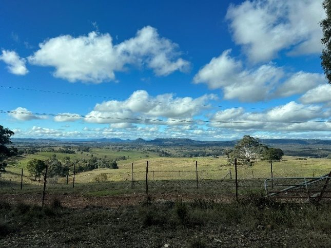

Deep Sky Notes — May 2025
Wiruna Wanderings

The lead up to the May Wiruna weekend was marked by torrential rain along the east coast, and sitting in rainy Sydney the forecast for Wiruna was not looking great. I decided to head up anyway. We arrived at Wiruna Friday afternoon to sunshine and a few clouds, bringing a cautious optimism that the skies might cooperate. A trickle of other members followed throughout the afternoon.
As the sun came down and the temperature dropped, the skies did indeed clear up. Around 5.30pm I headed out to the main observing field to set up the Go-To function of my 10-inch SCT. However, it was apparent immediately the RA drive was not functioning properly. So, with no chance of fixing the issue that night, my observing plan was out the window and it was going to be a night of manual star-hopping. View from Tara Loop Road.
My first target was an open cluster in Centaurus, NGC 5617. At 6.3 magnitude, this small, compact cluster is easy to locate 1 degree west-northwest of Rigil Kentaurus (one half of the Pointers). With the telescope pointed at Rigil Kentaurus it is easy to spot it in the viewfinder as a bright knot of stars. Discovered by James Dunlop while observing from an observatory in Parramatta, Sydney in 1826, he described it as “a cluster of small stars of mixed magnitudes, considerably congregated towards the centre”. I could pick out a distinctive figure-eight pattern of stars amongst the cluster. A fainter companion cluster, Trumpler 22, sits 0.5° south of NGC5617 and is gravitationally bound. Next, I nudged the telescope towards Hadar (Beta Centaurus). Leaving Hadar sitting just on the edge of the field of view, places NGC 5316 nicely in the field of view. This 6th magnitude cluster appears much broader and sparser, then its neighbour NGC5617, taking up most of the field of view in the 26mm (with ~0.43° AFOV).
From Centaurus, I hoped over into Carina, with Eta Carinae making an easy jumping off point. Sitting just 2° degrees north-west is NGC 3293 sitting 2 degrees North-West of Eta Carinae. This 5th magnitude open cluster is easy to spot in the finder scope as bright cluster of stars. NGC 3293 is a beautiful cluster with bright, compact core of blue-white supergiants, and single orange-red giant sitting amongst the sea of stars. Hence the nickname, “The Gem” cluster given to it by H.C. Russell. Long exposure images of this cluster show the region is rich in emission nebulae. If you ever get sick of the Jewel Box in Crux, I recommend this pretty open cluster nearby which is just as easy to find.
With Scorpius rising in the east, I swung the telescope down to Antares to hunt for globular clusters. With Antares in the viewfinder, it is impossible to miss the globular cluster M4. At 36’ and 5.6 magnitude, M4 is easy to pick up as a bright smudge in the viewfinder 1.3° NW of Antares. Antares itself is a red supergiant and a double star, with a 5.5 magnitude companion sitting within 2.6 arcseconds. With a 15mm (167x) we could catch glimpses of a second star protruding from the edge of Antares, at a 2o’clock position, but could not definitively split the pair.
I then followed down the body of Scorpius towards the tail of Scorpius marked by the bright open cluster NGC 6231 and Zeta Scorpii. Using this as a starting point I could pick up a triangle of open clusters in the viewfinder; NGC6242, NGC6268 and H12. H12 is a large 70’, 7th magnitude, sparsely populated cluster that really needs an eyepiece with a larger FOV to capture it all. So I skipped over to NGC 6242. At 6.4 magnitude cluster, 9’ wide, this cluster it not as bright as its neighbour NGC6231. It presents as a compact group of 30-40 stars with no discernible patterns to my eye. NGC 6268, at 9.5 magnitude and 9’ wide, is even fainter and less defined.
Next stop was Theta Scorpii, which makes up part of the tail of Scorpius. With Theta Scorpii in the viewfinder, I could just pick up the faint smudge of 6.8 magnitude NGC 6388 0.5° south of Theta Scorpii. This globular cluster displays a brighter core with a halo of unresolved stars. Although I could not resolve much detail, the globular appears nicely framed by 3 stars creating a triangle to frame the cluster. While looking through the eyepiece, keep in mind there is evidence of an intermediate-mass black hole lurking within this globular
From there I moved to the stinger of Scorpius made up of Lambda, Chi and G Scorpii. Pointing the telescope at 3rd magnitude G Scorpii, I am able to find the 7.2 magnitude globular cluster NGC 6441 5’ to the west. The field of view is dominated by the relatively bright G Scorpii which appears as a bright orange star, with the cluster tucked in beneath it. Again, little structure could be resolved in this globular.
I then jumped into Sagittarius, for my first proper views of this constellation this year. From the tail of Scorpius I could pick out Eta Sagittarii with the naked eye, which lead me down a chain of stars (including Epsilon and Delta Sagittarii). Just 0.8° southeast of Delta Sagittarii sits the globular cluster NGC 6624. This 7.6 magnitude cluster shows a brighter core surrounded by diffuse halo of unresolved stars. With averted vision, I could begin to pick out some of the brighter stars in the halo giving it more granular appearance.
Continuing down this chain of stars I hit Lambda Sagittarii, which marks the top of the “teapot” asterism in the centre of Sagittarius (or a “saucepan” if you use Sigma, Phi, Xi and Tau Sagittarii). With the telescope centred on Lambda Sagittarii, it was easy to pick up M22 as a bright 5.1 magnitude smudge in the viewfinder. In the eyepiece, this is a lovely globular with the core well resolved into a mass of individual stars. I love the irregular shape of this globular with chains of brighter stars streaming out from the core. Again, starting from Lambda Sagittarii, if you nudge the telescope 2° to the NW, the viewfinder can just pick up the faint smudge of M28, a 6.9 magnitude globular cluster. In the eyepiece, this cluster appears smaller than its neighbour M22, with only a few brighter stats resolved. Otherwise, the core remains a diffuse mass of unresolved stars. NGC 6638 completes the trio of globular clusters surrounding Lambda Sagittarii. Sitting just 40’ east of Lambda Sagittarii, this more challenging target appears as a faint diffuse glow. Nearby, the 12th magnitude planetary nebulae, NGC6644 lurks in between this trio of globular clusters.
By 11pm the westerly wind picked up and brought with it a thick cover of low cloud. Within minutes the entire sky was gone. I wandered off to the tent soon after to get some sleep and ponder on how I would get the RA drive working again. Saturday morning was a chilly 3c with the sun poking through the trees. Given the forecast and the need to work on repairing the telescope (again), I decided to head back to Sydney that afternoon. Until next month. Clear skies.